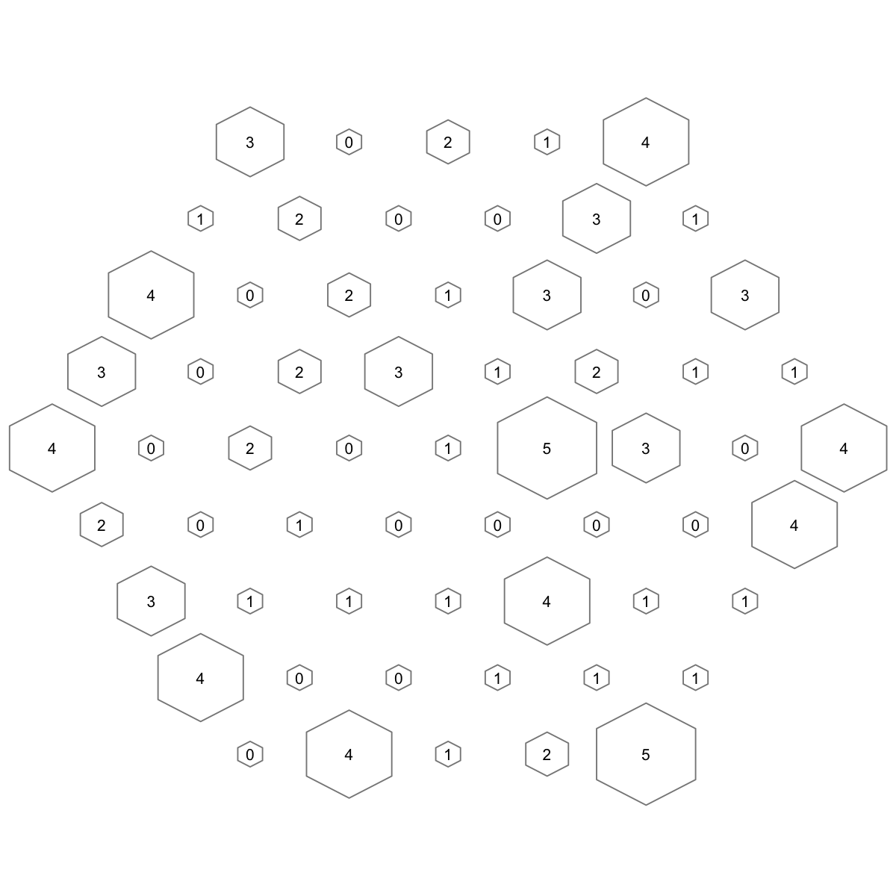
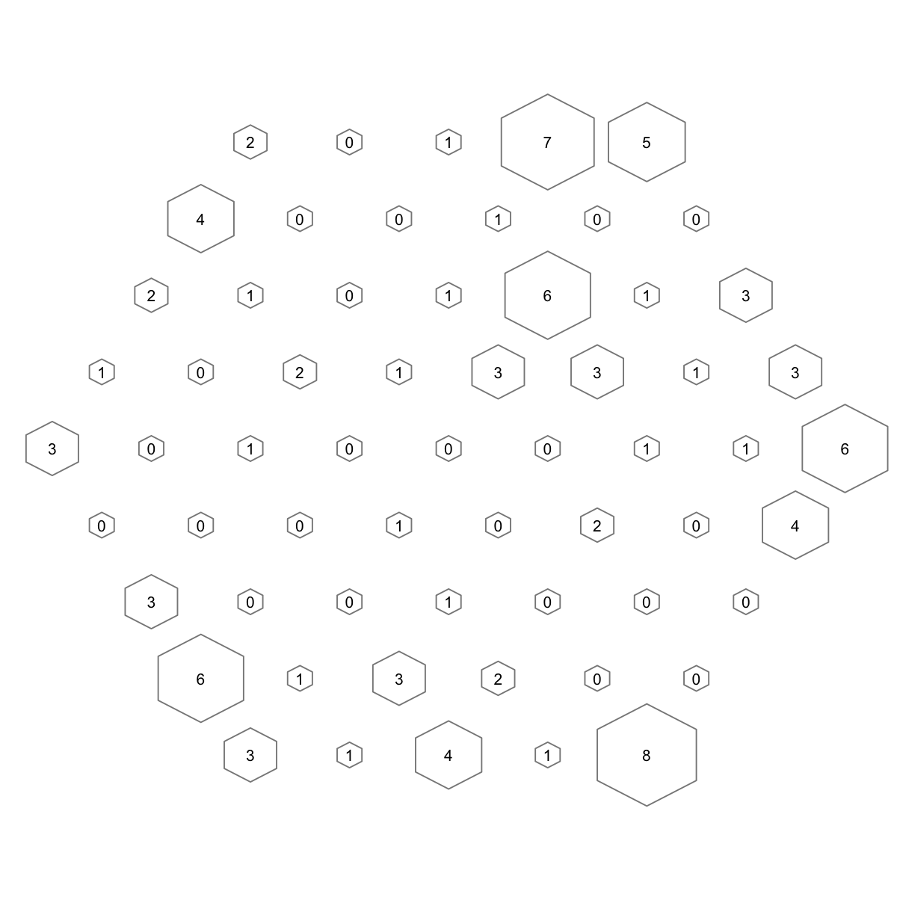

Start at 2015-06-04 10:45:05
First, define topology of a map grid (2015-06-04 10:45:05)...
Second, initialise the codebook matrix (61 X 10) using 'linear' initialisation, given a topology and input data (2015-06-04 10:45:05)...
Third, get training at the rough stage (2015-06-04 10:45:05)...
1 out of 7 (2015-06-04 10:45:05)
updated (2015-06-04 10:45:05)
2 out of 7 (2015-06-04 10:45:05)
updated (2015-06-04 10:45:05)
3 out of 7 (2015-06-04 10:45:05)
updated (2015-06-04 10:45:05)
4 out of 7 (2015-06-04 10:45:05)
updated (2015-06-04 10:45:05)
5 out of 7 (2015-06-04 10:45:05)
updated (2015-06-04 10:45:05)
6 out of 7 (2015-06-04 10:45:05)
updated (2015-06-04 10:45:05)
7 out of 7 (2015-06-04 10:45:05)
updated (2015-06-04 10:45:05)
Fourth, get training at the finetune stage (2015-06-04 10:45:05)...
1 out of 25 (2015-06-04 10:45:05)
updated (2015-06-04 10:45:05)
2 out of 25 (2015-06-04 10:45:05)
updated (2015-06-04 10:45:05)
3 out of 25 (2015-06-04 10:45:05)
updated (2015-06-04 10:45:05)
4 out of 25 (2015-06-04 10:45:05)
updated (2015-06-04 10:45:05)
5 out of 25 (2015-06-04 10:45:05)
updated (2015-06-04 10:45:05)
6 out of 25 (2015-06-04 10:45:05)
updated (2015-06-04 10:45:05)
7 out of 25 (2015-06-04 10:45:05)
updated (2015-06-04 10:45:05)
8 out of 25 (2015-06-04 10:45:05)
updated (2015-06-04 10:45:05)
9 out of 25 (2015-06-04 10:45:05)
updated (2015-06-04 10:45:05)
10 out of 25 (2015-06-04 10:45:05)
updated (2015-06-04 10:45:05)
11 out of 25 (2015-06-04 10:45:05)
updated (2015-06-04 10:45:05)
12 out of 25 (2015-06-04 10:45:05)
updated (2015-06-04 10:45:05)
13 out of 25 (2015-06-04 10:45:05)
updated (2015-06-04 10:45:05)
14 out of 25 (2015-06-04 10:45:05)
updated (2015-06-04 10:45:05)
15 out of 25 (2015-06-04 10:45:05)
updated (2015-06-04 10:45:05)
16 out of 25 (2015-06-04 10:45:05)
updated (2015-06-04 10:45:05)
17 out of 25 (2015-06-04 10:45:05)
updated (2015-06-04 10:45:05)
18 out of 25 (2015-06-04 10:45:05)
updated (2015-06-04 10:45:05)
19 out of 25 (2015-06-04 10:45:05)
updated (2015-06-04 10:45:05)
20 out of 25 (2015-06-04 10:45:05)
updated (2015-06-04 10:45:05)
21 out of 25 (2015-06-04 10:45:05)
updated (2015-06-04 10:45:05)
22 out of 25 (2015-06-04 10:45:05)
updated (2015-06-04 10:45:05)
23 out of 25 (2015-06-04 10:45:05)
updated (2015-06-04 10:45:05)
24 out of 25 (2015-06-04 10:45:05)
updated (2015-06-04 10:45:05)
25 out of 25 (2015-06-04 10:45:05)
updated (2015-06-04 10:45:05)
Next, identify the best-matching hexagon/rectangle for the input data (2015-06-04 10:45:05)...
Finally, append the response data (hits and mqe) into the sMap object (2015-06-04 10:45:05)...
Below are the summaries of the training results:
dimension of input data: 100x10
xy-dimension of map grid: xdim=9, ydim=9
grid lattice: hexa
grid shape: suprahex
dimension of grid coord: 61x2
initialisation method: linear
dimension of codebook matrix: 61x10
mean quantization error: 1.35513779440565
Below are the details of trainology:
training algorithm: batch
alpha type: invert
training neighborhood kernel: gaussian
trainlength (x input data length): 7 at rough stage; 25 at finetune stage
radius (at rough stage): from 3 to 1
radius (at finetune stage): from 1 to 1
End at 2015-06-04 10:45:05
Runtime in total is: 0 secs

Start at 2015-06-04 10:45:05
First, define topology of a map grid (2015-06-04 10:45:05)...
Second, initialise the codebook matrix (61 X 10) using 'linear' initialisation, given a topology and input data (2015-06-04 10:45:05)...
Third, get training at the rough stage (2015-06-04 10:45:05)...
1 out of 700 (2015-06-04 10:45:05)
70 out of 700 (2015-06-04 10:45:05)
140 out of 700 (2015-06-04 10:45:05)
210 out of 700 (2015-06-04 10:45:06)
280 out of 700 (2015-06-04 10:45:06)
350 out of 700 (2015-06-04 10:45:06)
420 out of 700 (2015-06-04 10:45:06)
490 out of 700 (2015-06-04 10:45:06)
560 out of 700 (2015-06-04 10:45:06)
630 out of 700 (2015-06-04 10:45:06)
700 out of 700 (2015-06-04 10:45:06)
Fourth, get training at the finetune stage (2015-06-04 10:45:06)...
1 out of 2500 (2015-06-04 10:45:06)
250 out of 2500 (2015-06-04 10:45:06)
500 out of 2500 (2015-06-04 10:45:06)
750 out of 2500 (2015-06-04 10:45:06)
1000 out of 2500 (2015-06-04 10:45:06)
1250 out of 2500 (2015-06-04 10:45:06)
1500 out of 2500 (2015-06-04 10:45:06)
1750 out of 2500 (2015-06-04 10:45:06)
2000 out of 2500 (2015-06-04 10:45:06)
2250 out of 2500 (2015-06-04 10:45:06)
2500 out of 2500 (2015-06-04 10:45:06)
Next, identify the best-matching hexagon/rectangle for the input data (2015-06-04 10:45:06)...
Finally, append the response data (hits and mqe) into the sMap object (2015-06-04 10:45:06)...
Below are the summaries of the training results:
dimension of input data: 100x10
xy-dimension of map grid: xdim=9, ydim=9
grid lattice: hexa
grid shape: suprahex
dimension of grid coord: 61x2
initialisation method: linear
dimension of codebook matrix: 61x10
mean quantization error: 1.88486291245215
Below are the details of trainology:
training algorithm: sequential
alpha type: invert
training neighborhood kernel: gaussian
trainlength (x input data length): 7 at rough stage; 25 at finetune stage
radius (at rough stage): from 3 to 1
radius (at finetune stage): from 1 to 1
End at 2015-06-04 10:45:06
Runtime in total is: 1 secs

){kind=link}
){kind=link}